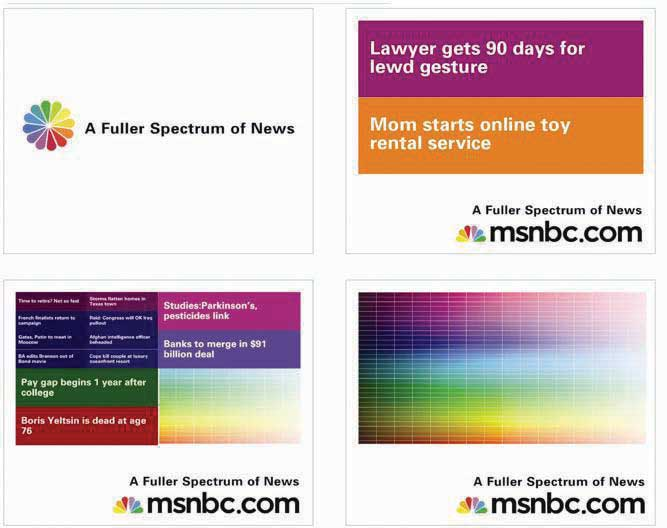
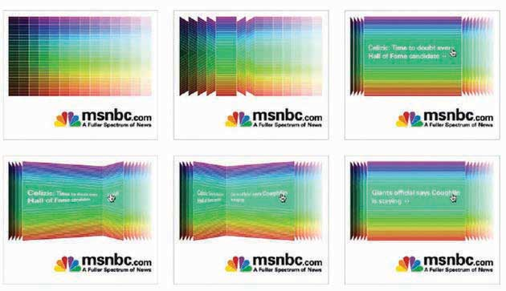
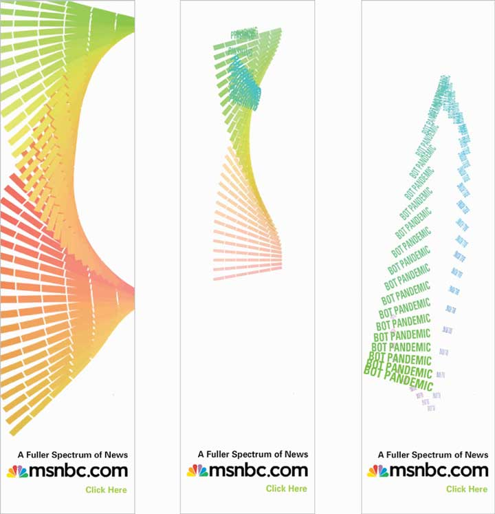
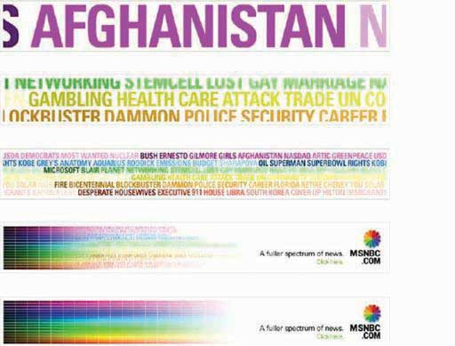

The creative elements of the online campaign had to be engaging in order to deliver on the Big Idea of enjoying the journey (“Dive In. Swim Around.”), so the team set out to make interactive and engaging banners. The banners appeared on different sites from ESPN (http://espn.go.com) to The Weather Channel (http://www.weather.com), with unique messaging and links for each of those unique placements.
Figure 13.6
These banners, titled “Subdivide,” would split stories and color bricks when the mouse scrolled over the banner, ultimately resulting in the full spectrum. SS+K worked with BEAM Interactive on all the banners.
Figure 13.7
The banners titled “Page Flip” had one color category flip through a range of stories when initiated by the mouse.
Figure 13.8
The “Helix” banners responded directly to a mouse-over by having the animation “follow” the direction of the mouse. The ad features rotating keywords that a user could click on.
Figure 13.9
The “Keywords” banner ads were built in Flash, rather than rich media, so they had an animation that would take a range of topics available on msnbc.com and slowly merge them into the spectrum.
The press started, and the initial paid launch elements ran heavily through the first six weeks. As they continued through the rest of the communications plan, more elements were introduced. The marketing elements were devices that, while introduced during the campaign, would live on after ads stopped running. You can still find these interactive elements by going to msnbc.com; there are even more of them since the first campaign launch in April 2007.